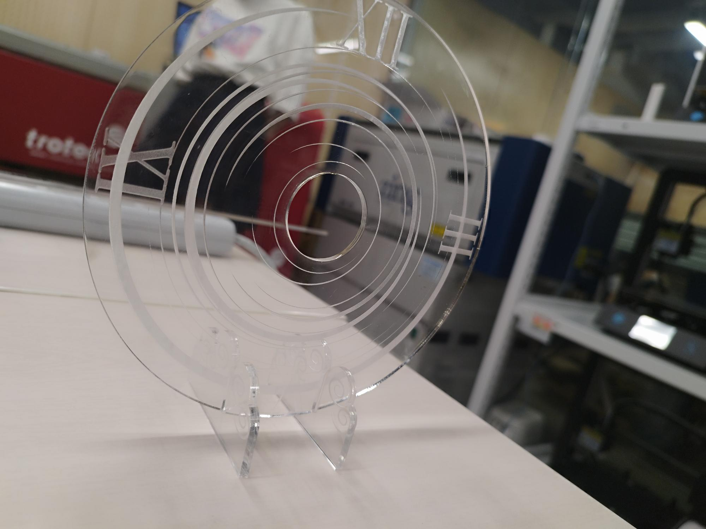
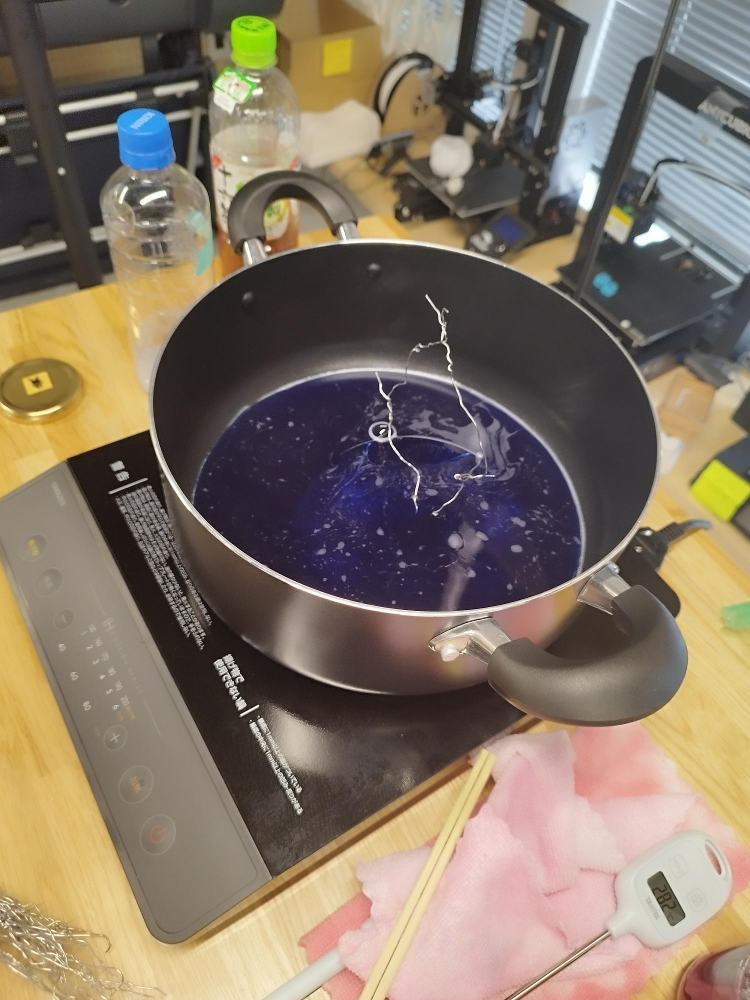
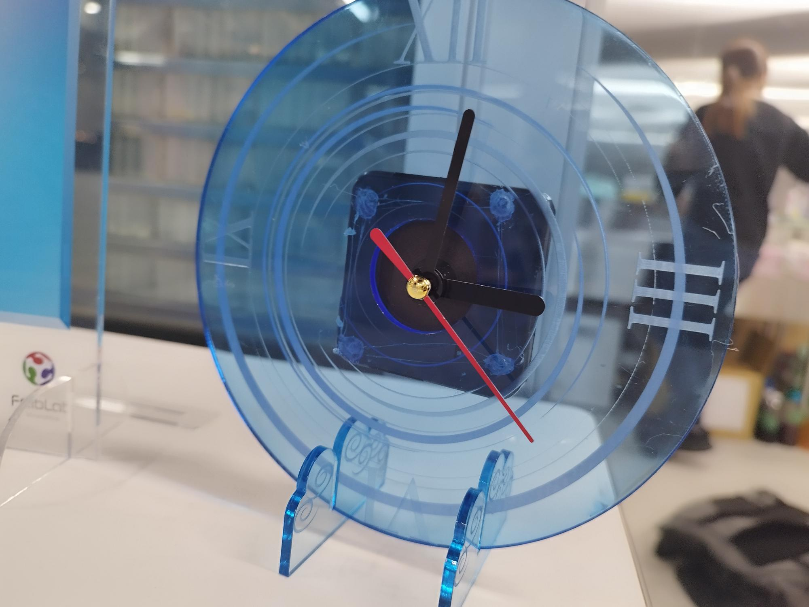
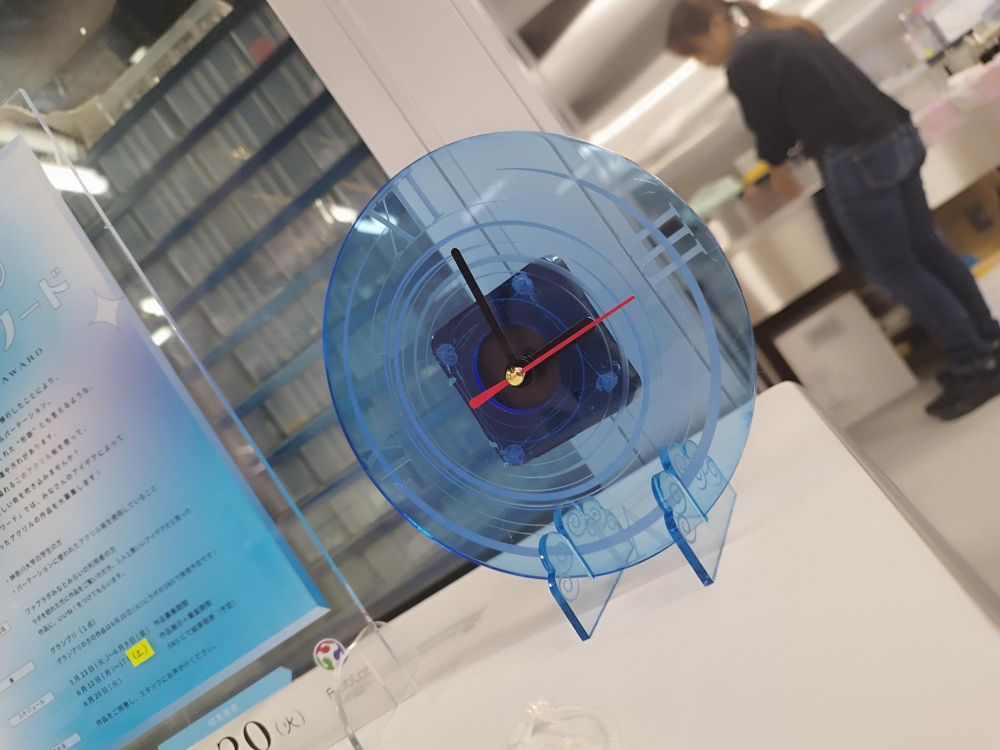

- コンセプト：時間に追われる現代社会で、ゆったりと時間を感じられるようなデザインの時計を作る
- デザインコンセプト１： 長時間露光：
シャッタースピードを遅くして撮影すると、動いているものの軌跡がそのまま撮影される
光っているものは光の線のように表現される
- デザインコンセプト２： アクリル板は元からキズがついている→キズを流れ星だと思えばうまく活かせる？
実際作ってみて
- アクリルのはめ込みをきっちり目にするには、アクリルの厚さ-0.2mmで切り取り線をデザインする
- 時計本体はダイソーのアナログ時計を解体してはめ込む（これから）→はめ込み口は30mm



前のページに戻る